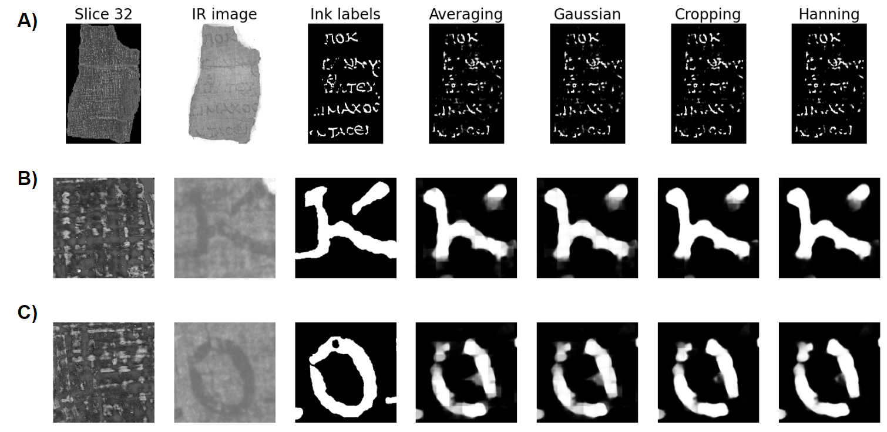
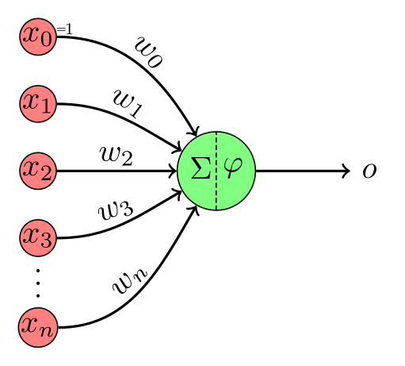
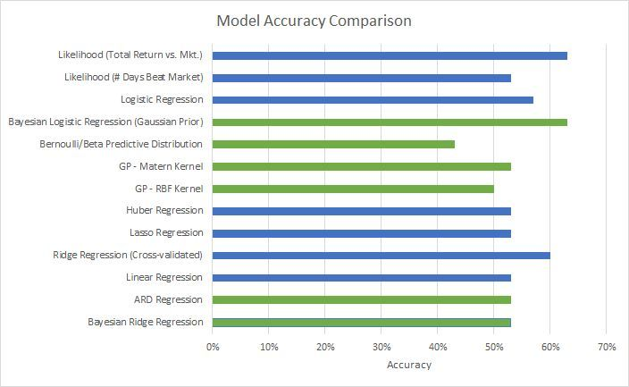

Vesuvius: ink detection
I led the runner-up team in the 2023 Vesuvius Challenge, detecting ink in micro-CT scans of carbonized papyri.
Explore the submission: Vesuvius: ink detection (opens in a new tab)Machine Learning Engineer & Researcher
I'm Lou, a machine learning engineer and researcher interested in mathematical reasoning, spatial cognition, and neuro-inspired AI.
I led the runner-up team in the 2023 Vesuvius Challenge, presented research at the NeurIPS Meta-Learning workshop, and have built large-scale multimodal ML systems in production.
Two starting points in my work on computer vision and machine learning.
I led the runner-up team in the 2023 Vesuvius Challenge, detecting ink in micro-CT scans of carbonized papyri.
Explore the submission: Vesuvius: ink detection (opens in a new tab)
Combining Bayesian optimization and genetic programming to search for machine learning models. Presented at the NeurIPS 2019 Meta-Learning workshop.
Read the paper: Automated model search (opens in a new tab)Computer vision, geometry, and automated model search.

A report on patch aggregation methods in ink detection for the Vesuvius Challenge. Awarded August, 2024 Progress Prize.
View on GitHub: Vesuvius: patch aggregation (opens in a new tab)A method to detect ink in carbonized micro-CT scans of the Herculaneum Papyri. Awarded runner-up in the 2023 Grand Prize.
View on GitHub: Vesuvius: ink detection (opens in a new tab)
A topological and geometric analysis comparing and contrasting scrolls and fragments from the Vesuvius Challenge to better understand domain differences.
View on GitHub: Vesuvius: scroll geometry (opens in a new tab)Presented at the 3rd Workshop on Meta-Learning at NeurIPS 2019, Vancouver, Canada.
View paper: Automated model search (opens in a new tab)
Master's Project, Washington University in St. Louis, May 2019.
View paper: Evolutionary kernel search (opens in a new tab)Applications, visualizations, and experiments across my interests.

Simple experiments for creating occlusions in PyBullet and testing video prediction models like PredRNN.
View on GitHub: Occlusion and video prediction (opens in a new tab)
A model to classify the category of a math problem. A fine-tuned version of bert-base-uncased on a subset of the MATH dataset.
View on Hugging Face: Math problem classification (opens in a new tab)A Gradio web app that helps analyze USA Table Tennis (USATT) tournament and league results by providing basic statistics and performance visualizations over time.
View Project: USATT Rating Analyzer (opens in a new tab)
An app to help combat sex trafficking by allowing users to upload photos of hotel rooms they stay in. Developed for the Media and Machines Lab at Washington University in St. Louis.
View on Google Play Store: TraffickCam for Android (opens in a new tab)
A web service and Android app that leverages Twitter's Geolocation API and WashU network data to provide real-time information on restaurant crowd levels on campus.
View Project: SnackHack (opens in a new tab)
A D3 visualization of artisanal chocolate companies and ratings using expert review data from the Manhattan Chocolate Society.
View Project: Chocolate ratings visualization (opens in a new tab)
A survey of community detection algorithms on Reddit data, based on the paper 'Detection and Analysis of Subreddit Communities'.
View on GitHub: Reddit community detection (opens in a new tab)
A collection of algorithms implemented in various languages, covering topics from machine learning to multi-agent systems, including AdaBoost, neural networks, and the auction algorithm.
View on GitHub: Algorithm implementations (opens in a new tab)
An evaluation of stock price prediction algorithms using analyst ratings.
View on GitHub: Bayesian stock price prediction (opens in a new tab)
A D3 cartogram of U.S. presidential elections ranging from 1940 to 2016.
View Project: U.S. election cartogram (opens in a new tab)
An evaluation of several machine learning methods applied to the Adult Data Set to predict income.
View on GitHub: Income prediction (opens in a new tab)
A visualization of k-means clustering on terrorist attack locations using PySpark. Dataset contains 170,000+ terrorist attacks worldwide from 1970 to 2016.
View on GitHub: Global terrorism clustering with Spark (opens in a new tab)
A WebGL rendering implementation of a terrain generator based on a 3D-projected terrain map. Uses the Diamond Square Algorithm to procedurally generate terrain.
View Project: Procedural terrain generation (opens in a new tab)An implementation of 'Image Quilting for Texture Synthesis and Transfer' (Elfros & Freeman, 2001).
View on GitHub: Image quilting (opens in a new tab){kind=link}
{kind=link}
{kind=link}
{kind=link}
{kind=link}